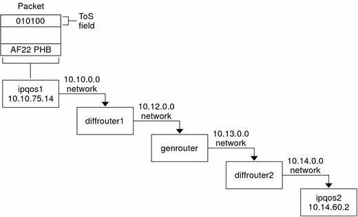

Previous
Previous
Packet Forwarding in a Diffserv Environment
The following figure shows part of an intranet at a company with a partially Diffserv-enabled environment. In this scenario, all hosts on networks 10.10.0.0 and 10.14.0.0 are IPQoS enabled, and the local routers on both networks are Diffserv aware. However, the interim networks are not configured for Diffserv.
Figure 32-2 Packet Forwarding Across Diffserv-Aware Network Hops
The next steps trace the flow of the packet that is shown in this figure. The steps begin with the progress of a packet that originates at host ipqos1. The steps then continue through several hops to host ipqos2.
The user on ipqos1 runs the ftp command to access host ipqos2, which is three hops away.
ipqos1 applies its QoS policy to the resulting packet flow. ipqos1 then successfully classifies the ftp traffic.
The system administrator has created a class for all outgoing ftp traffic that originates on the local network 10.10.0.0. Traffic for the ftp class is assigned the AF22 per-hop behavior: class two, medium-drop precedence. A traffic flow rate of 2Mb/sec is configured for the ftp class.
ipqos-1 meters the ftp flow to determine if the flow exceeds the committed rate of 2 Mbit/sec.
The marker on ipqos1 marks the DS fields in the outgoing ftp packets with the 010100 DSCP, corresponding to the AF22 PHB.
The router diffrouter1 receives the ftp packets. diffrouter1 then checks the DSCP. If diffrouter1 is congested, packets that are marked with AF22 are dropped.
ftp traffic is forwarded to the next hop in agreement with the per-hop behavior that is configured for AF22 in diffrouter1's files.
The ftp traffic traverses network 10.12.0.0 to genrouter, which is not Diffserv aware. As a result, the traffic receives "best-effort" forwarding behavior.
genrouter passes the ftp traffic to network 10.13.0.0, where the traffic is received by diffrouter2.
diffrouter2 is Diffserv aware. Therefore, the router forwards the ftp packets to the network in agreement with the PHB that is defined in the router policy for AF22 packets.
ipqos2 receives the ftp traffic. ipqos2 then prompts the user on ipqos1 for a user name and password.